Statistical Causality
Philip Dawid
Statistical Laboratory
University of Cambridge
Statistical Causality
1. The Problems of Causal Inference
2. Formal Frameworks for Statistical Causality
3. Graphical Representations and Applications
4. Causal Discovery
1. The Problems of Causal Inference
Conceptions of Causality
• Constant conjunction
– Deterministic
• Mechanisms
– “Physical” causality
Agency
– Effects of actions/interventions
Contrast
– Variation of effect with changes to cause
Causal Queries
• If I had taken aspirin half an hour ago,
would my headache would have gone by
now?
– “Causes of Effects”, CoE
– Counterfactual
– LAW
• If I take aspirin now, will my headache be
gone within half an hour?
– “Effects of Causes”, EoC
– Hypothetical
– SCIENCE, STATISTICS
Causal Enquiry
• Experimentation (“doing”)
– To find out what happens to a system when you
interfere with it you have to interfere with it
(not just passively observe it) – George Box
• Observation (“seeing”)
– Cost
– Ethics
– Practicality
• No necessary connexion!
Problems of observational studies
An observed association between a “cause”
and an “effect” may be spurious:
– Reverse causation
– Regression to mean
– Confounding
• common cause
• differential selection
– …
Problems of observational studies
The facts about fuel (Which?, August 2007)
Mr Holloway said that a colleague of his used to
drive from London to Leeds and back, using
Shell petrol to go up there and BP fuel to drive
back. He was convinced the BP petrol gave
better fuel economy, but Ray had another
explanation: ‘I pointed out that Leeds is at a
higher altitude that London: he was going uphill
one way and downhill the other!’
Problems of observational studies
Vitamin supplements and mortality
Many observational studies appeared to
indicate that antioxidant supplements
(vitamins A and E, -carotene) reduce the
risk of disease.
Randomized controlled trials showed that
they increase mortality.
Problems of observational studies
Calcium channel blockers
Non-experimental studies suggested an
increased risk of myocardial infarction
associated with the short-acting calcium
channel blocker (CCB) nifedapine.
It took almost a decade to obtain RCT
evidence, which showed that long-acting
nifedapine is safe.
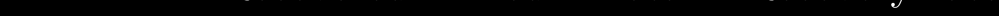


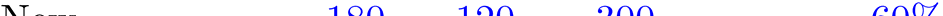
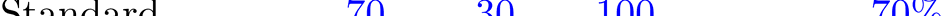
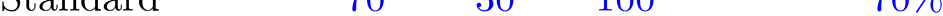


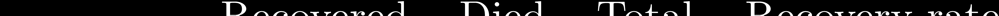
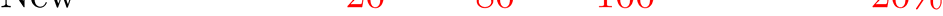


Simpson’s Paradox
Causal Inference
• Association is not causation!
• Traditionally, Statistics dealt with association
– Theory of Statistical Experimental Design and
Analysis does address causal issues
• but of no real use for observational studies
• How to make inferences about causation?
– “bold induction”, to a novel context
• Do we need a new formal framework?
2. Formal Frameworks for
Statistical Causality
Some Formal Frameworks
Probability distributions
• Potential responses
• Functional relationships
Extended conditional independence
• …
• Structural equations
• Path diagrams
Directed acyclic graphs
• …
A SIMPLE (??) PROBLEM
• Randomised experiment
• Binary (0/1) treatment decision variable
T
• Response variable
Y
Define/measure “the effect of treatment”
Probability Model (Fisher)
• Specify/estimate conditional distributions
P for Y given T = t (t = 0, 1)
t
[e.g. N( , 2) ]
t
• Measure effect of treatment by change in the distribution
of Y: compare P and P
0
1
– e.g. by change in expected response:
=
(average causal effect, ACE)
1
0
• Probability model all we need for decision theory
– choose t to minimise expected loss E
{L(Y)}
Y ∼ Pt
Decision Tree
Y
Y~P
y
0
0
L(y)
T
1
Y
y
L(y)
Y~P1
Influence Diagram
T
Y
L
t
Y | T=t ~ P
L(y)
t
Structural Model
Y = + E
T
[e.g., E ∼ N(0, 2)]
(E = “error”, “effect of omitted variables”,…)
• Deterministic relationship
• Value of E for any unit supposed the
same if we were to change T from 0 to 1
• Then value of Y would change by
exactly =
1
0
– individual causal effect (ICE)
Potential Response Model (Rubin)
• Split Y in two:
Y : potential response to T = 0
0
Y : potential response to T = 1
1
• Consider (for any unit) the pair Y = (Y , Y )
0
1
– with simultaneous existence and joint distribution
• Treatment “uncovers” pre-existing response:
Y = Y (determined by Y and T)
T
– other PR unobservable, “counterfactual”
• Unit-level (individual) [random] causal effect
Y Y
– necessarily unobservable!
1
0
General Functional Model
Y = f(T, U)
(U = “unit characteristics”)
• Value of U supposed the same , independent of
value of T
– and of whether we intervene or just observe
• Formally includes:
– Structural model: U = E, Y = + E
T
– PR model:
U = Y, Y = YT
Potential Response Model
• Any functional model Y = f(T, U) generates a
PR model: Y = f(t, U)
t
• Any PR model generates a probability model:
P is marginal distribution of Y
(t = 0, 1)
t
t
• Distinct PR models can generate the same
statistical model
– e.g., correlation between Y and Y arbitrary
0
1
• Cannot be distinguished observationally
• Can have different inferential consequence
– can be problematic!
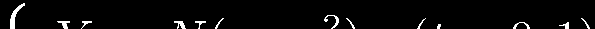
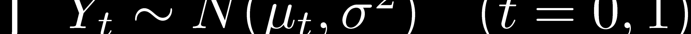
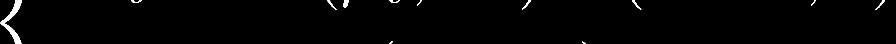
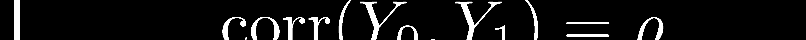
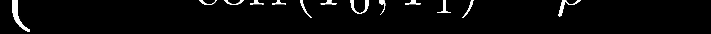
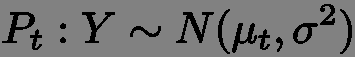
Potential Responses: Problems
• PR model:
• Corresponding statistical model:
NB: does not enter! – can never identify
– does this matter??
Potential Responses: Problems
Under PR model:
E(Y /Y ) depends on
1
0
We can not estimate a “ratio” ICE
var(Y Y ) = 2(1 ρ) σ2
1
0
We can not identify the variance of the ICE
E(Y Y | Y = y ) = (1 ρ) y + (ρ )
1
0
1
1
1
1
0
We can not identify the (counterfactual)
ICE, after observing response to treatment
OBSERVATIONAL STUDY
• Treatment decision taken may be
associated with patient’s state of health
• What assumptions are required to
make causal inferences?
• When/how can such assumptions be
justified?
Functional Model
Y f (T ,U )
T = treatment received
U = “unit characteristics”
– value supposed unaffected by treatment or how it
is applied
– but could influence choice of treatment T
observational dependence between T and U
Response to applied treatment t: Y = f(t, U).
t
Observational distribution of Y, given T = t,
same as distribution of Y if
t
Functional Model
U
U ~ PU
T
Y
Y f (T ,U )
U = “unit characteristics”
– value supposed unaffected by treatment or how it
is applied
– but could influence treatment choice
Functional Model
U
U ~ PU
T ~ P
T
Y
Y f (T ,U )
T
“No confounding” (“ignorable treatment assignment”) if
T ⊥⊥ U
(treatment independent of “unit characteristics”)
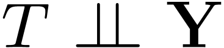
PR interpretation (U = Y)
Y
Y ~ PY
T ~ P
T
Y
Y Y
T
T
“No confounding” (“ignorable treatment assignment”) if
(treatment independent of potential responses)
PR interpretation (U = Y)
• Value of Y = (Y , Y ) on any unit
0
1
supposed the same in observational and
experimental regimes, as well as for both
choices of T
• No confounding: independence of T
from PR pair Y
How are we to judge this??
Statistical Decision Model
• “Treatment regime indicator” variable FT
– intervention variable
– non-random, parameter
• Values:
F = 0 : Assign treatment 0
( T = 0)
T
F = 1 : Assign treatment 1
( T = 1)
T
F = ∅ : Just observe
(T random)
T
(Point intervention: can generalize)
Statistical Decision Model
• Causal target: comparison of distributions of Y
given F = 1 and given F = 0
T
T
– e.g., E(Y | F = 1) E(Y | F = 0)
T
T
average causal effect, ACE
• Causal inference: assess this (if possible) from
properties of observational regime, F = ∅
T
Statistical Decision Model
True ACE is
E(Y | T = 1, F = 1) E(Y | T = 0, F = 0)
T
T
Its observational counterpart is:
E(Y | T = 1, F = ∅) E(Y | T = 0, F = ∅)
T
T
“No confounding” (ignorable treatment assignment)
when these are equal.
Can strengthen:
p(y | T = t, F = 1) = p(y | T = t, F = ∅)
T
T
distribution of Y | T the same in observational
and experimental regimes

Extended Conditional Independence
Distribution of Y | T the same in observational and
experimental regimes:
Y | (F , T) does not depend on value of F
T
T
Can express and manipulate using notation and
theory of conditional independence:
(even though F is not random)
T
3. Graphical Representations and
Applications
Extended Conditional Independence
Distribution of Y | T the same in observational and
experimental regimes:
Y | (F , T) does not depend on value of F
T
T
Can express and manipulate using notation and
theory of conditional independence:
(even though F is not random)
T
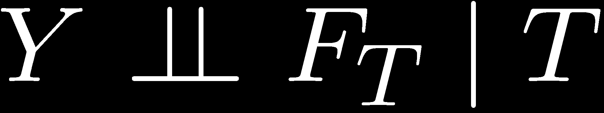
Augmented DAG
– with random variables and intervention variables
– probabilistic (not functional) relationships
F
T
Y
0/1/∅
T
0/1
T | (F = ∅) ∼ P
Y | T
(T, F )
T
T
T
Absence of arrow F → Y expresses
T
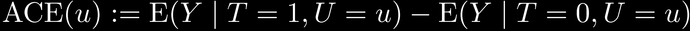
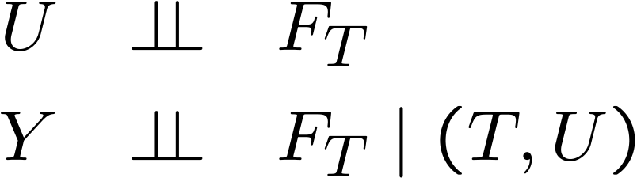
Sufficient Covariate
“(un)confounder”
U
F
T
Y
T
• Treatment assignment ignorable given U
– (generally) not marginally ignorable
• If U is observed, can fit model (e.g. regression)
for dependence of Y on (T,U)
– causally meaningful
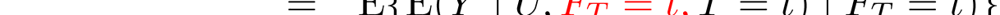


Sufficient covariate
“(un)confounder”
Can estimate ACE:
(“back-door” formula)
Similarly, whole interventional distribution:

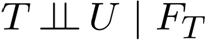
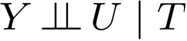
Non-confounding
U
b
a
F
T
Y
T
Treatment assignment ignorable given U
Ignorable marginally if either a or b is absent:
a
b
“randomization”
“irrelevance”
–then need not even observe U
Pearlian DAG
• Envisage intervention on any variable in
system
• Augmented DAG model, but with intervention
indicators implicit
• Every arrow has a causal interpretation
Pearlian DAG
A
B
C
D
E
Intervention DAG
F
A
B
F
A
B
F
C
D
F
C
D
F
E
E

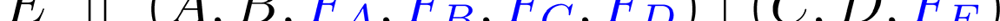
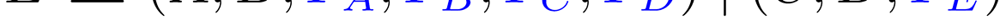
Intervention DAG
F
A
B
F
A
B
F
C
D
F
C
D
F
E
E
• e.g.,
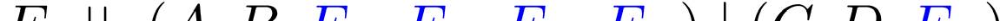

Intervention DAG
F
A
B
F
A
B
F
C
D
F
C
D
F
E
E
• e.g.,
• When E is not manipulated, its conditional
distribution, given its parents C, D is unaffected by
the values of A, B and by whether or not any of the
other variables is manipulated
– modular component
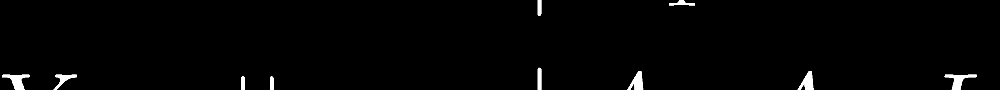
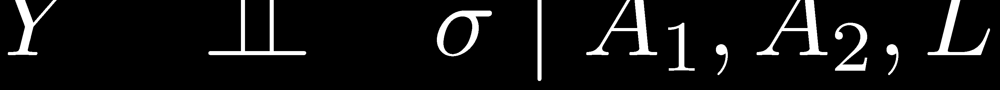
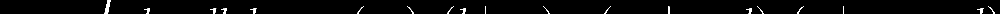
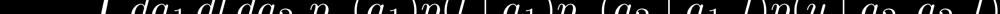
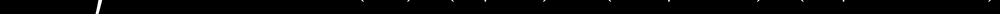
More complex DAGs
U
L
(influence diagram)
Y
By d-separation:
A
A
1
2
= treatment strategy
(would fail if e.g. U → Y)
Instrumental Variable
W
W
⊥⊥ FX
F
Y
⊥⊥ FX | (X, W )
X
X
Y
Linear model: E(Y | X=x, W, F ) = W + β x
X
So E(Y | F = x) = E(W | F = x ) + β x
X
X
= α + β x
β is causal regression coefficient
– but not estimable from observational data
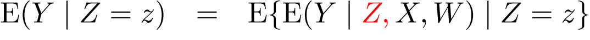
Instrumental Variable
W
W
⊥⊥ FX
F
Y
⊥⊥ FX | (X, W )
X
X
Y
Z
⊥⊥ (W, FX)
Y
⊥⊥ Z | (X, W ; FX)
Z
–so can now identify β
Discrete case
W
X, Y, Z binary
W
⊥⊥ FX
F
Y
⊥⊥ FX | (X, W )
X
X
Y
Z
⊥⊥ (W, FX)
Y
⊥⊥ Z | (X, W ; FX)
Z
Can develop inequalities for ACE
E(Y | F = 1) – E(Y | F = 0)
X
X
in terms of estimable quantities
Mendelian Randomisation
W
Does low serum cholesterol
level increase the risk of cancer?
FX
X
Y
X
= serum
cholesterol
Y
= cancer
Z
W
= diet,
smoking,…
Z
= APOE
gene
(E2 allele induces particularly
low serum cholesterol)
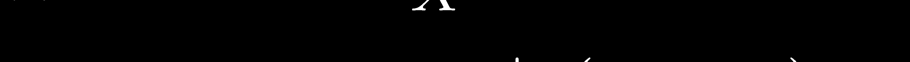
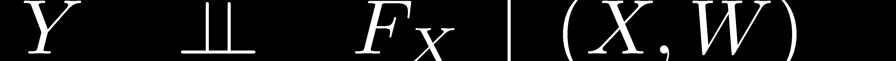
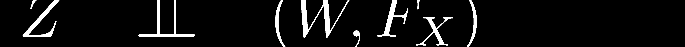
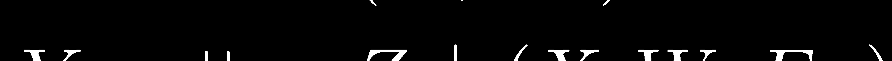
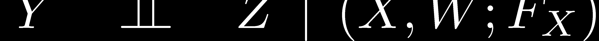
Equivalence
W
W
F
F
X
X
Y
X
X
Y
causal?
U
Z
Z
Non-equivalence
W
W
F
F
X
X
Y
X
X
Y
causal?
U
Z
F
F
Z
Z
Z
X 6⊥⊥ Z | FZ
X ⊥⊥ Z | FZ
Can we identify a causal effect from
observational data?
• Model with domain and (explicit or implicit)
intervention variables, specified ECI properties
– e.g. augmented DAG, Pearlian DAG
• Observed variables V, unobserved variables U
• Can identify observational distribution over V
• Want to answer causal query, e.g. p(y | F = x)
X
– write as p(y | ˇ
x)
• When/how can this be done?
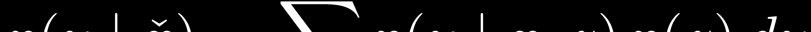
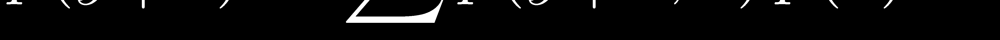
Example: “back-door formula”
Z
F
X
Y
X
Z
⊥⊥ FX
Y
⊥⊥ FX | (X, Z)
Example: “back-door formula”
Z
Z
1
2
Z
Z
Z
3
4
5
F
X
Z
Y
X
6
Z
⊥⊥ FX
Y
⊥⊥ FX | (X, Z)
Works for Z = (Z , Z ), and also for Z = (Z , Z )
3
4
4
5

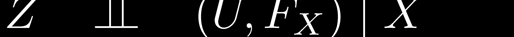
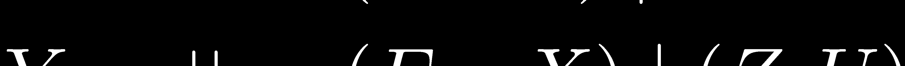
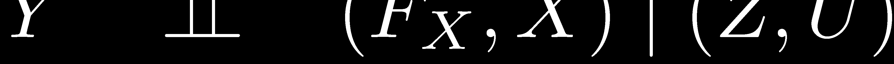
Example: “front-door formula”
U
F
X
Z
Y
X
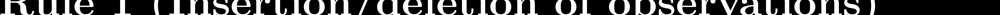


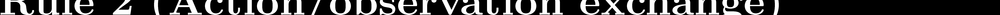


do-calculus
do-calculus
For a problem modelled by a Pearlian DAG, the
do-calculus is complete:
• Any computable causal effect can be computed
by successive applications of rules 2 and 3
– together with probability calculus, and property
F
»
(delete dotted arrows)
T = t ⇒ T = t
• There exist algorithms to accomplish this
4. Causal Discovery
Probabilistic Causality
• Intuitive concepts of “cause”, “direct cause”,…
• Principle of the common cause:
“Variables are independent, given their
common causes”
• Assume causal DAG representation:
– direct causes of V are its DAG parents
– all “common causes” included
Probabilistic Causality
CAUSAL MARKOV CONDITION
– The causal DAG also represents the observational
conditional independence properties of the
variables
• WHEN??
• WHY??
• CAUSAL FAITHFULNESS CONDITION
– No extra conditional independencies
• WHY??
Causal Discovery
• An attempt to learn causal relationships from
observational data
• Assume there is an underlying causal DAG
(possibly including unobserved variables)
satisfying the (faithful) Causal Markov Condition
• Use data to search for a DAG representing the
observational independencies
model selection
• Give this a causal interpretation
Causal Discovery
Two main approaches:
• “Constraint-based”
– Qualitative
– Infer (patent or latent) conditional independencies
between variables
– Fit conforming DAG model(s)
• Statistical model selection
– Quantitative
– General approach, applied to DAG models
– Need not commit to one model (model uncertainty)
Constraint-Based Methods
(complete data)
• Identify/estimate conditional independencies
holding between observed variables
• Assume sought-for causal DAG does not
involve any variables other than those observed
Wermuth-Lauritzen algorithm
• Assume variables are “causally ordered” a
priori:
(V , V ,…, V ), s.t arrows can only go from lower to
1
2
N
higher
• For each i, identify (smallest) subset S of
i
Vi-1 := (V , V ,…, V ) such that
1
2
i-1
Vi ⊥⊥ V i−1 | Si
• Draw arrow from each member of S to V
i
i
SGS algorithm
(no prior ordering)
1. Start with complete undirected graph over VN
2. Remove edges V–W s.t., for some S, V ⊥
⊥ W | S
3. Orient any V–Z–W as V→Z←W if:
–
n o edg e V–W
–
for each S ⊆ VN with Z ∈ S, V 6⊥
⊥ W | S
4. Repeat while still possible:
i.
if V→Z –W but not V–W, orient as V→Z →W
ii. If VÃW and V–W, orient as V→W
Comments
•
Wermuth-Lauritzen algorithm
–
always finds a valid DAG representation
–
need not be faithful
–
depends on prior ordering
•
SGS algorithm
–
may not succeed if there is no faithful DAG
representation
–
output may not be fully oriented
–
computationally inefficient (too many tests)
–
better variations: PC, PC*
Constraint-Based Methods
(incomplete data)
• Allow now for unobserved (latent) variables
• Can modify previous algorithms to work just
with conditional independencies between
observed variables
• But latent CI has other (quantitative)
implications too…
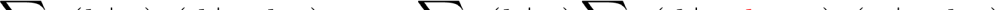
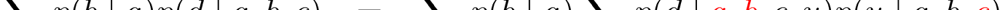
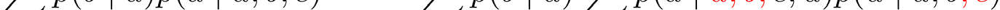
Discrete variables:
U
A
B
C
D
No CI properties between observables A, B, C, D.
But
– does not depend on a
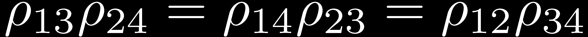
Normal variables:
U
X
X
X
X
1
2
3
4
No CI properties between observables X , X , X , X .
1
2
3
4
But
Such properties form basis of TETRAD II program
Bayesian Model Selection
• Consider collection M = {M} of models
• Have prior distribution ( ) for parameter
M
M
M
of model M
• Based on data x, compute marginal likelihood for
each model M:
L = ∫ p(x | ) d
M
M
M
• Use as score for comparing models, or combine
with prior distribution {w } over models to get
M
posterior:
w* ∝ w L
M
M
M
Bayesian Model Selection
• Algebraically straightforward for discrete or
Gaussian DAG models, parametrised by
parent-child conditional distributions, having
conjugate priors (with local and global
independence)
Zoubin Ghahramani’s lectures
• Can arrange hyperparameters so that
indistinguishable (Markov equivalent) models
get same score
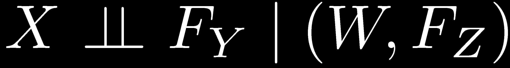
Mixed data
• Data from experimental and observational
regimes
• Model-selection approach:
– assume Pearlian DAG
– ignore local likelihood contribution when the
response variable is set
• Constraint-based approach?
– base on ECI properties, e.g.
A Parting Caution
• We have powerful statistical methods for
attacking causal problems
• But to apply them we have to make strong
assumptions (e.g. ECI assumptions, relating
distinct regimes)
• Important to consider and justify these in
context
– e.g., Mendelian randomisation
NO CAUSES IN, NO CAUSES OUT
Thank you!
Further Reading
• A. P. Dawid (2007). Fundamentals of Statistical Causality.
Research Report 279, Department of Statistical Science,
University College London. 94 pp.
http://www.ucl.ac.uk/Stats/research/reports/abs07.html#279
• R. E. Neapolitan (2003). Learning Bayesian Networks.
Prentice Hall, Upper Saddle River, New Jersey.
• J. Pearl (2009). Causality: Models, Reasoning and Inference
(second edition). Cambridge University Press.
• D. B. Rubin (1978). Bayesian inference for causal effects: the
role of randomization. Annals of Statistics 6, 34–68.
• P. Spirtes, C. Glymour, and R. Scheines (2000). Causation,
Prediction and Search (second edition). Springer-Verlag,
New York.
• P. Suppes (1970). A Probabilistic Theory of Causality. North
Holland, Amsterdam.
Document Outline